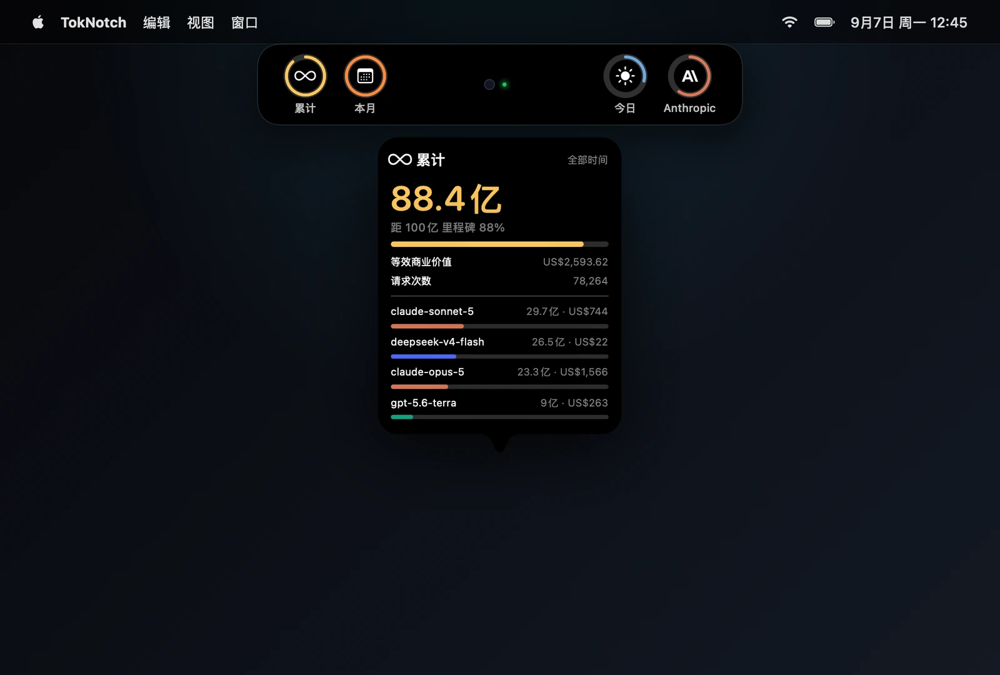

TokNotch · 屏幕边缘 AI 编码用量指示器
常驻屏幕边缘或 MacBook 原生刘海，零配置无感直读 Claude Code、Cursor、Codex、Antigravity、GLM 等各家 AI 助手的用量限额与实时忙碌状态。
macOS 14.0+ · v1.0.0
获取与下载 →
底特律近郊 4 人聚餐深度指南
Fraser 30 分钟自驾圈、人均 $30 内。精选 6 家正统风味老店（正宗川菜、陕西扯面夹馍、也门慢炖羊肉、拉面生煎、韩式烤肉、日式拉面），深度风味解析与实战点单。
精选 6 店深度版
查看指南 →
青瓦台 Chung Ki Wa 深度点餐指南
Sterling Heights 正宗韩式烤肉。完整中文菜单解析，BBQ套餐/火锅/特色菜全覆盖，含10张实拍菜单图，精选必点菜品推荐。Google 4.3分 · 1000+ 条评价。
完整菜单 · 真实照片
查看指南 →